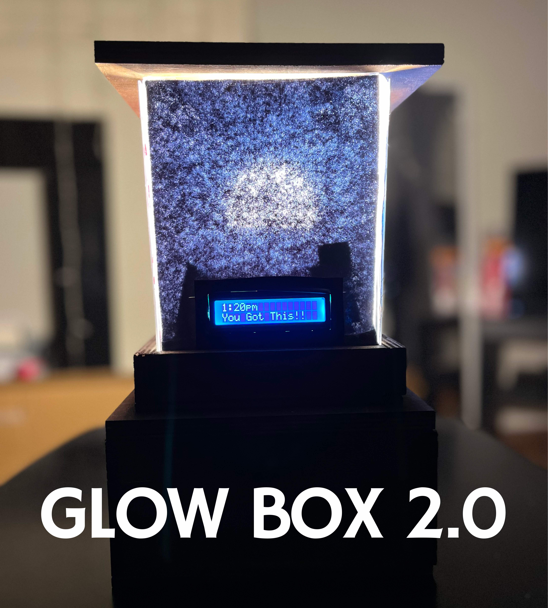

Maker Lab Portfolio
Group Maker Project 1

Group Maker Project 2

Project to address a social issue of concern.
Inspiration for both critical making projects was rooted in a sense of responsibility to create an ethical and socially responsible design.